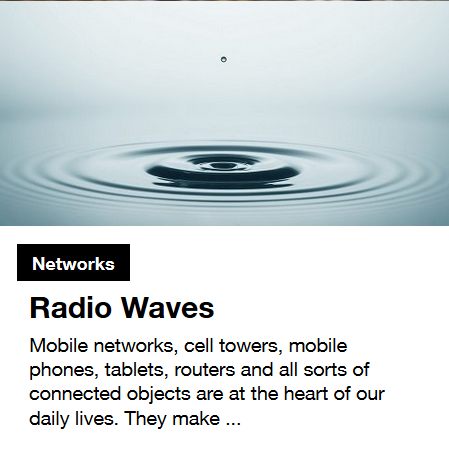
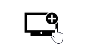

Non-textual content
Ensure that an alternative to non-text content is provided to the user.
Define text alternatives #
Target: people with visual or hearing impairments, seniors, people with cognitive impairments and search engines.
When: from conception and during development.
Description:
A text alternative must be provided for each non-textual element: images, animation, video, podcast, advertisements, buttons, icons, logos, etc.
For images, buttons, icons, logos, etc., the rules are as follows:
- For clickable images: specify the function / target of the link
- For decorative images: leave the text alternative blank
- For images that convey information: text alternative describing the information
- For complex images (diagrams, graphs, etc.): provide adjacent equivalent textual content:
- text in the page
- or a link pointing to another page with this description.
Special case: formatting via an image #
If it is technically possible for you to achieve your visual via formatted text, it is better to choose this solution to convey information rather than text in the form of an image.
Only permissions where the formatting can be done via an image:
- Whether the text in image form can be customized visually by the user;
- If a specific presentation of the text is essential to the information conveyed (example: text or name of a brand in a logo).
In these specific cases, provide a text alternative containing at least the text of the image and check the contrasts of the colors used.
Special cases of animations, video and audio content #
For non-informative and purely decorative elements, no need for a text alternative. Just ensure that the animation is ignored by assistive technologies.
For animations carrying information, provide a transcription (script type) containing the information of the content in text form.
For audio and / or video content, a textual transcription (scripts) and / or subtitles must be provided according to the following rules:
- Pre-recorded audio content: textual transcription equivalent to the audio content
- Pre-recorded video without audio:
- textual transcription at minimum
- or an audio track equivalent to the content of the video
- Pre-recorded video (with or without audio):
- textual transcription at minimum
- Relevant and correctly synchronized audio description if necessary
- Pre-recorded video with audio: transcribed subtitles showing all the content
- Live video with audio: transcribed subtitles showing all the content
Examples: #
-
Decorative image: Empty text alternative (understand:
alt="")
 -
Clickable image: valid alternative text : "add a TV channel"
